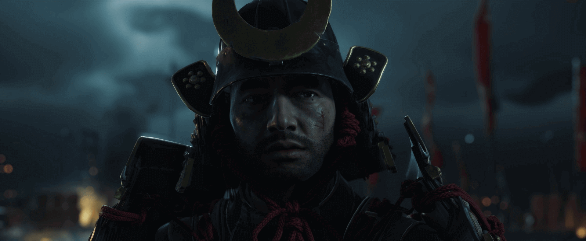
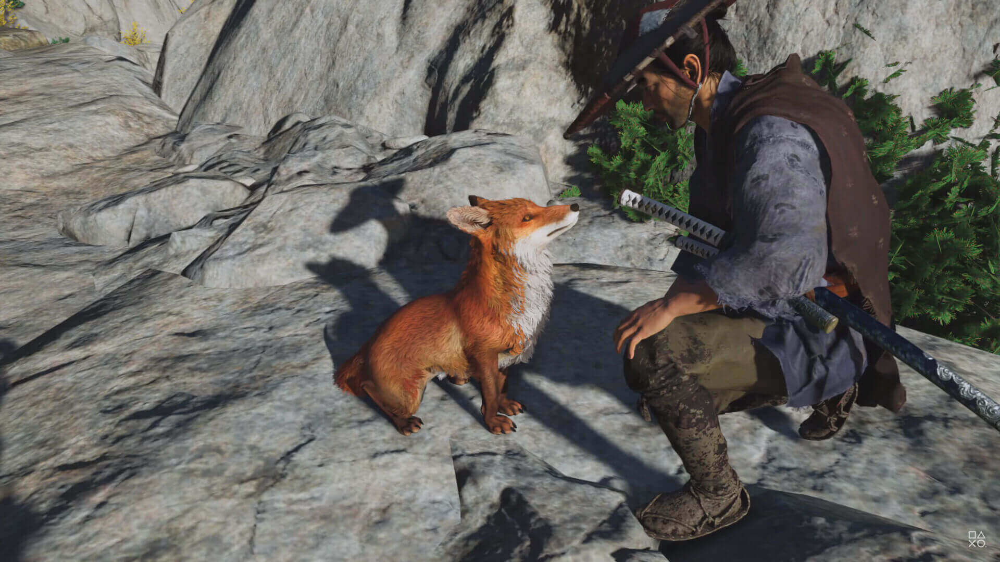
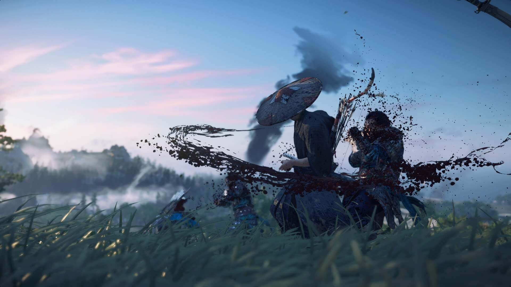
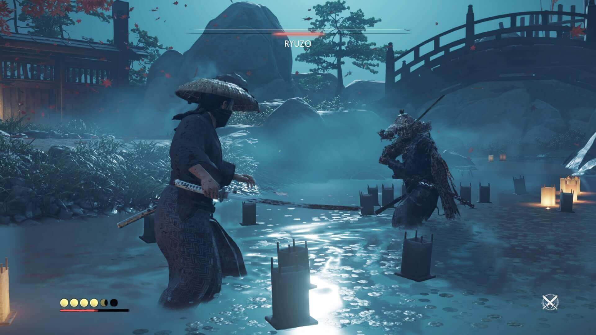
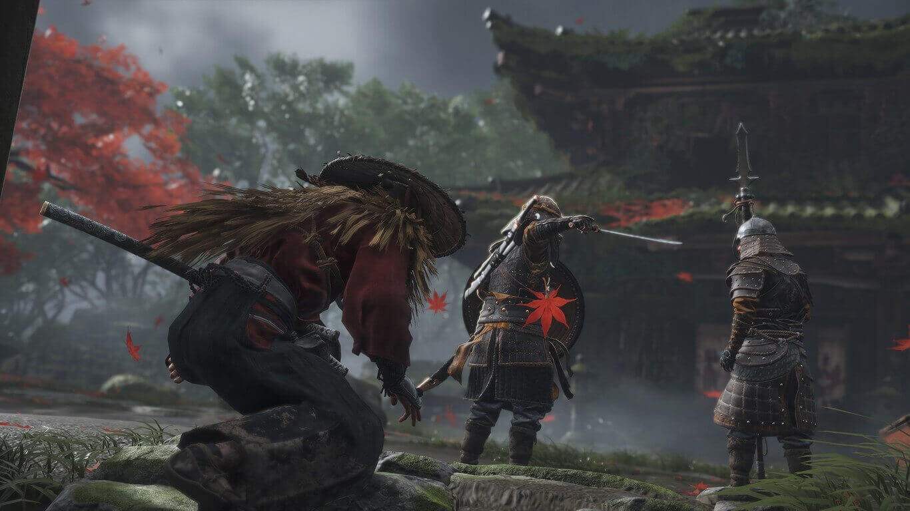
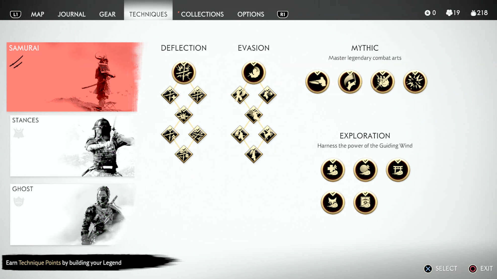
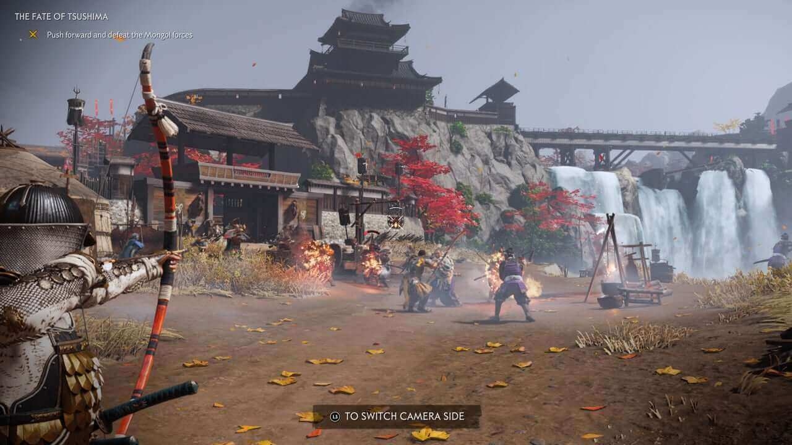

Ghost Of Tsushima
Aviso: Este juego se encuentra disponible para la plataforma de PS4.
El Japón feudal es un periodo histórico fascinante y lleno de misticismo que sirvió como telón de fondo para numerosos videojuegos. Una época en la que el País del Sol Naciente fue asolado por multitud de guerras internas entre los diferentes clanes que luchaban por hacerse con el control de la nación y cumplir el sueño de muchos de unificarla bajo un solo estandarte, lo que se tradujo en infinidad de muertes y miserias en una era marcada por el caos y el horror.
Todo esto causó la aparición de multitud de interesantísimas leyendas que han sido muy bien explotadas en todo tipo de medios, pero, por algún motivo, encontrar en videojuegos un enfoque más o menos realista de esta era es algo bastante complicado. Más sorprendente todavía es el hecho de que nadie haya aprovechado hasta ahora una ambientación como esta para crear un gran y ambicioso juego de mundo abierto que nos haga sentir como auténticos samuráis.
Trailer
La Invasión de Tsushima.
Esta historia nos lleva al año 1274, cuando los mongoles decidieron invadir Japón y desembarcaron en la isla de Tsushima. Esto desembocó en una batalla en la que 80 samuráis intentaron defender su tierra con catastróficos resultados, un hecho real que el juego toma como punto de partida para ponernos en la piel de Jin Sakai, un joven guerrero japonés que consigue sobrevivir milagrosamente a la matanza.
Sin embargo, esta derrota no amedranta a nuestro héroe, quien emprende la misión personal de expulsar al invasor, algo para lo que necesitará dejar atrás el código de honor por el que se ha regido toda su vida y adoptar nuevas tácticas y estrategias con las que sembrar el terror entre las filas enemigas y defender a su pueblo, aunque ello suponga traicionarse a sí mismo y a sus propias creencias. Al fin y al cabo, los mongoles no entienden de honor y para ellos en la guerra todo vale.

El desarrollo del guion es muy simple e incluso predecible, pero nos resulto super entretenido, especialmente por lo bien contado que está todo y el gigantesco esfuerzo que hace por homenajear de la mejor forma posible las películas clásicas de samuráis, replicando planos, transiciones, fotografía e incluso el ritmo de ciertas escenas. Además, han sabido darle muchísima fuerza a los momentos más importantes de la historia, dejándonos para el recuerdo secuencias muy memorables y épicas que han hecho que conectemos de lleno con su narrativa desde el principio hasta el final.
Lo más interesante es que esto también se aplica a los propios personajes, mucho más profundos y complejos de lo que podría parecer en un primer momento, denotando una buena construcción en sus personalidades y trasfondos para hacerlos creíbles y humanos, algo complicado. Son muy coherentes consigo mismos, con la cultura nipona de la época y con la situación que les toca vivir, y tienen un carácter tan marcado que, al final, resulta imposible no empatizar con ellos.

Pero si hay algo que nos ha gustado de la narrativa del juego es lo mucho que cuenta no solo a través de la campaña principal, sino también de sus misiones opcionales, las verdaderas culpables de hacer que todo funcione tan bien en este sentido. En ellas nos permitirán profundizar en los personajes principales y secundarios, así como conocer mejor la isla de Tsushima y la forma en la que sus habitantes están viviendo la guerra, por lo que todas aportan su granito de arena a la hora de darle credibilidad y coherencia a su mundo, ayudándonos a tener una mejor comprensión de la escala global del conflicto y de cómo este afecta a los más vulnerables e indefensos.
Un Mundo Por Explorar y Descubrir.
Centrándonos en su jugabilidad, comentar que nos encontramos ante un juego de mundo abierto que sigue a grandes rasgos la fórmula habitual de este tipo de producciones, soltándonos de la mano en un mapa con muchas cosas por hacer mientras mejoramos a nuestro personaje, superamos misiones, encontramos coleccionables, peleamos contra numerosos enemigos y nos infiltramos sigilosamente en ciertos lugares.
Sin embargo, en vez de apostar por un mundo gigantesco y atiborrado de iconos que nos indiquen a dónde ir en todo momento, sus desarrolladores han querido potenciar la sensación de aventura y descubrimiento gestionando la exploración de un modo diferente. Al contrario de lo que viene siendo habitual, cuando comencemos a jugar nos encontraremos con que todo el mapa está en blanco, cubierto por una especie de niebla de guerra que podremos despejar a medida que nos movamos por él.

En vez de guiarnos con flechas e indicadores a nuestros objetivos, el juego incluye un original sistema mediante el cual el viento nos guiará hasta los lugares que marquemos en el mapa. Esto permite mantener la pantalla limpia de elementos de interfaz y potencia la inmersión para que podamos disfrutar plenamente de sus escenarios, además de resultar muy intuitivo y útil.
O lo que es lo mismo, para encontrar las diferentes actividades y puntos de interés que hay tenemos que explorar por nuestra cuenta, fijarnos en el entorno e investigar aquellos lugares o zonas que nos hayan llamado la atención. Aunque esto pueda parecer un poco vago, lo cierto es que está muy bien diseñado y funciona muy bien, ya que hay muchosdetalles que nos ayudan a encontrar todos estos sitios.

Se nota la experiencia de Sucker Punch en el género, ya que el mundo tiene un diseño muy inteligente y será raro que en nuestros viajes no encontremos algo que merezca la pena investigar. Es precisamente acá donde tenemos uno de los mayores aciertos del juego, ya que siempre premia la curiosidad del jugador y hace que explorar sea una experiencia muy divertida, satisfactoria y orgánica, algo que nos parece básico en un título de estas características.
El problema llega en el momento en el que nos damos cuenta de que estos puntos de interés se resumen en una serie de actividades extremadamente básicas, poco variadas y sin ningún tipo de atractivo más allá del hecho de obtener mejoras permanentes para nuestro personaje. En esencia, todo se resume en pegarnos un baño reflexionando sobre algún tema, componer haikus, seguir zorros, cortar bambú en un minijuego y conquistar campamentos, algo que repetiremos decenas de veces y a lo que también tenemos que sumarle una serie de eventos aleatorios que adolecen del mismo problema y que pierden su frescura en la primera hora de juego.

Algo más interesantes son los santuarios, unas pruebas puramente "plataformeras" en las que deberemos escalar montañas calculando nuestros saltos y buscando la forma de avanzar por ellas, siendo de las cosas más entretenidas que encontraremos al explorar este mundo.
El Arte de la Katana.
En lo que respecta a las peleas, el título tiene un sistema muy sencillo pero muy divertido y que rara vez aburre. En esencia, todo se resume en un golpe flojo y en otro fuerte para romper la postura de los enemigos y aturdirlos, aunque no esperen combos demasiado complejos o complicadas combinaciones de botones, ya que no van a encontrar nada de eso. La clave consiste en cambiar entre las diferentes poses que podemos adoptar para seleccionar la que sea más efectiva contra el tipo de enemigo al que estemos haciendo frente y así desbaratar sus defensas con mayor facilidad.
La defensa también es muy importante, ya que podremos bloquear ataques, esquivar (importante esto, hay golpes imbloqueables) y hacer paradas perfectas con las que exponer al rival a un poderoso contraataque, algo que requiere muchísima precisión y un timing prácticamente perfecto. Tampoco podemos olvidarnos del medidor de determinación, gracias al cual podremos curarnos y desencadenar algunas técnicas especiales muy útiles, ni de las armas a distancia, entre las que se incluyen arcos con diversos tipos de flechas, kunáis, bombas de humo, etcétera.

Si tenemos en cuenta que, por lo general, estaremos en desventaja numérica y que los enemigos no se quedan quietos esperando su turno para atacar, los enfrentamientos se convierten en unas intensas batallas en las que no pararemos de cambiar de postura, priorizar blancos, usar artimañas, bloquear y esquivar.
Además, tanto los enemigos como nosotros tenemos una vida relativamente baja, por lo que no duraremos demasiados tajos sin curarnos y los rivales pueden ser liquidados en tan solo dos o tres katanazos una vez rompemos sus defensas, lo que le da un punto de tensión que le sienta bastante bien. Lo único que no nos convenció tanto es la cámara, ya que tiende a dar problemas y a dejarnos vendidos a la mínima que nos despistemos.

Pero, sin duda, nuestras peleas favoritas fueron los duelos, unos combates que vendrían a equivaler a los jefes finales del juego. En ellos, la cámara cambia y adopta una posición mucho más cinematográfica para realzar la épica de la batalla.
Además, únicamente podremos usar la katana para pelear, lo que da pie a unas espectaculares lizas en las que debemos aprender a leer los movimientos de nuestros enemigos para bloquear y esquivar sus ataques. Como decimos, representan algunos de los mejores momentos de toda la aventura y son emocionantes hasta decir basta, algo que se ve realzado por los escenarios geniales en los que tienen lugar.
El Fantasma de Tsushima.
La otra cara de la jugabilidad de Ghost of Tsushima la tenemos en el sigilo, ya que también podremos infiltrarnos silenciosamente en diferentes lugares para eliminar a nuestros enemigos desde las sombras sin que se puedan defender, aunque, sinceramente, esta es de las cosas que menos nos gustó. ¿El motivo? Todas las mecánicas relacionadas con el sigilo son extremadamente básicas.
En esencia vamos a hacer lo mismo que ya hicimos en decenas de juegos: escondernos en la hierba, movernos por techos, cuerdas y colocarnos a la espalda de los enemigos para ejecutarlos de un único golpe. Contamos con algunas distracciones para atraerlos a las posiciones que queramos, así como bombas de humo para escapar.

También tenemos un "modo escucha" para detectar blancos hostiles a través de las paredes y armas a distancia que apenas hacen ruido, pero no esperen nada demasiado elaborado. Súmenle una IA enemiga algo torpe a la que podemos marear con mucha facilidad, y les va a resultar sencillo entender lo mucho que sale perdiendo esta vertiente del título frente a los combates, infinitas veces más divertidos, entretenidos y satisfactorios.
Personalizando a Jin.
Como no podía ser de otro modo, el juego también incluye algunos elementos de personalización, aunque son tan livianos y ligeros que al final nuestro personaje acabará sirviendo para todo independientemente de nuestra forma de jugar. De entrada nos encontramos con que el clásico sistema de subida de nivel se sustituComo no podía ser de otro modo, el juego también incluye algunos elementos de personalización, aunque son tan livianos y ligeros que al final nuestro personaje acabará sirviendo para todo independientemente de nuestra forma de jugar.
De entrada nos encontramos con que el clásico sistema de subida de nivel se sustituyó por la obtención de puntos de habilidad a medida que obtenemos renombre y nuestra leyenda crece por Tsushima, algo que conseguiremos realizando todo tipo de actividades y superando misiones. por la obtención de puntos de habilidad a medida que obtenemos renombre y nuestra leyenda crece por Tsushima, algo que conseguiremos realizando todo tipo de actividades y superando misiones.
Estos puntos los podremos invertir en un árbol de talentos dividido en tres categorías distintas donde desbloquearemos mejoras para nuestro personaje, como la posibilidad de desviar flechas o ralentizar el tiempo al apuntar con un arco. Sin embargo, al final Jin puede desbloquear todo por lo que terminamos siendo expertos tanto en el arte de la infiltración como en la lucha con katana, algo que le saca cierto encanto a todo este sistema, ya que no habrá motivos reales que nos inviten a una futura rejugada.
Algo parecido ocurre con el equipo, ya que en este juego no existe el "loot" como tal y las armaduras que encontraremos son muy limitadas y únicamente nos las darán como recompensa en ciertas misiones, por lo que únicamente deberemos reunir una serie de materiales muy básicos para mejorarlo y aumentar sus diferentes características, algo que también se aplica a nuestra katana y a nuestros arcos.

Eso sí, no hubiera estado mal una mayor variedad y distinción entre las armaduras, ya que solo la pieza del pecho es la que tiene un impacto en nuestro personaje, otorgándole tres ventajas diferentes para potenciar cosas como su defensa o el tiempo que tardan los enemigos en detectarnos.
De todos modos, es perfectamente posible ser completamente sigilosos mientras vestimos la armadura más cantosa y pesada que podamos imaginar, así como combatir como auténticos expertos aunque apenas tengamos algo que nos proteja, y el equipo que consigamos en los compases más avanzados no será necesariamente mejor que lo que obtengamos al principio. Pasamos casi todo el juego con la misma ropa y no llegamos a ver motivos reales para cambiarla por otra, dejando todo este sistema en algo un poco anecdótico incluso en la dificultad más alta.
Un Buen Diseño de Misiones.
Pero si hay algo que nos gusto muhco de Ghost of Tsushima son sus misiones, son muchísimo más elaboradas que las que solemos encontrar en la mayoría de juegos de este tipo, proponiéndonos objetivos muy diversos que hacen que sean muy variadas e interesantes.

Son, sin duda, de las cosas más trabajadas de todo el juego y se nota que tomaron nota de lo que hacen los grandes del género, por lo que casi todas están cuidadísimas ya sean principales o secundarias, y son muy coherentes con el contexto argumental del juego, algo necesario para no romper la inmersión ni la fantasía de ser un samurái que lucha por su pueblo en un gran conflicto en el que tiene todo en contra.
La Belleza Natural de Japón
A nivel gráfico tampoco se queda atrás, ofreciéndonos un juego con unos escenarios naturales preciosos que no paran de deleitarnos la vista, lo que ayuda a que queramos recorrer hasta el último rincón de la isla con tal de disfrutar de su dirección de arte. Y ojo, ya que no hablamos solo de la parte artística, sino también de la técnica, capaz de poner en pantalla unas texturas muy sólidas, un rendimiento impecable, una gran distancia de dibujado, escenarios repletos de detalles y buenos modelados, por no hablar de ciertos efectos o del uso tan bueno que hace de la iluminación para crear estampas únicas.
Algunas animaciones pueden resultar un poco extrañas por la forma en la que nuestro héroe interactúa con el entorno (por ejemplo, no esperen que el personaje cambie su forma de andar habitual cuando suba por unas escaleras o una rampa), pero en líneas generales, todo luce a un nivel muy alto.
Lo mismo va para el sonido, simplemente espectacular y con una banda sonora que capta a la perfección el tipo de historias y aventuras que viviremos, realzando cada momento y dotando de muchísima personalidad a la obra mezclando orquesta e instrumentos tradicionales japoneses. Además, la música está genialmente utilizada, adaptándose de forma dinámica a lo que ocurre y sonando en los momentos clave para acompañar la acción como pocos juegos saben hacer.
Dato Aparte:
El juego incluye un filtro opcional que emula el aspecto de las películas clásicas de Akira Kurosawa. Es genial jugar con él activado, ya que no solo se limita a mostrar la imagen en blanco y negro, sino que también incluye desperfectos y deterioros para imitar la calidad de vídeo de cintas tan icónicas y legendarias como 'Los Siete Samuráis'.
Conclusiones
Ghost of Tsushima es un juego que hace de su ambientación su principal factor diferenciador, transportándonos a un precioso mundo abierto por el que da gusto perderse. Quizá no haga nada nuevo ni revolucionario dentro del género, pero su ejecución es más que notable y nos lo ha hizo pasar muy bien descubriendo sus secretos, librando intensos duelos con nuestra katana, disfrutando de su historia y su cuidada narrativa, expandiendo nuestra leyenda y cumpliendo elaboradas misiones de todo tipo.
Dista mucho de ser perfecto y cosas como el sigilo, la cámara, la variedad de actividades o la IA podrían haber dado más de sí, pero al final, el recuerdo que nos queda es el de haber vivido una entretenidísima aventura repleta de grandes momentos, así que si te atrae su fascinante trasfondo y queres vivir en tus propias carnes una auténtica película clásica de samuráis, difícilmente te decepcionará todo lo que tiene por ofrecerte la nueva obra de Sucker Punch.
Para jugarlo encontralo en